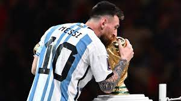

Lionel Messi, ícono del fútbol argentino, ha dejado una huella imborrable con la selección de su país a lo largo de su carrera. Participando en múltiples Copas del Mundo, desde 2006 hasta las más recientes en 2022, Messi ha liderado a Argentina con habilidad y determinación. Su contribución se hizo especialmente destacada en la Copa América 2021, donde guió al equipo hacia la victoria, marcando goles cruciales y destacándose como un líder indiscutible. Con un impresionante récord goleador, Messi se convirtió en el máximo anotador histórico de la selección, abarcando eliminatorias, copas continentales y amistosos. No solo ha sido un goleador prolífico, sino también un creador de juego, proporcionando numerosas asistencias con su visión única y su destreza técnica. A lo largo de los años, ha establecido varios récords individuales, consolidando su estatus como una leyenda del fútbol argentino. A pesar de las cambiantes circunstancias y desafíos, Messi continúa siendo un pilar fundamental para la selección, dejando un legado duradero en la historia del fútbol internacional.
Y justo cuando estaba formalmente sin equipo entre su larga trayectoria en Barcelona y la que ahora ultima en París, Messilevantó su primer gran título con la selección argentina de fútbol, la Copa América. Antes había logrado el oro olímpico en Pekín 2008 o el Mundial sub 20 en 2005.
Solo le faltaba la Copa del Mundo, la más difícil de este deporte, y La Pulga la ha conseguido este domingo al ganar a Francia en la final con otro recital de juego para el recuerdo.
Para repasar su palmarés individual también hay que empezar por el país ahora más lo sufre y lo disfruta y es que France Football le ha premiado hasta siete temporadas con el Balón de Oro al mejor jugador del mundo.
